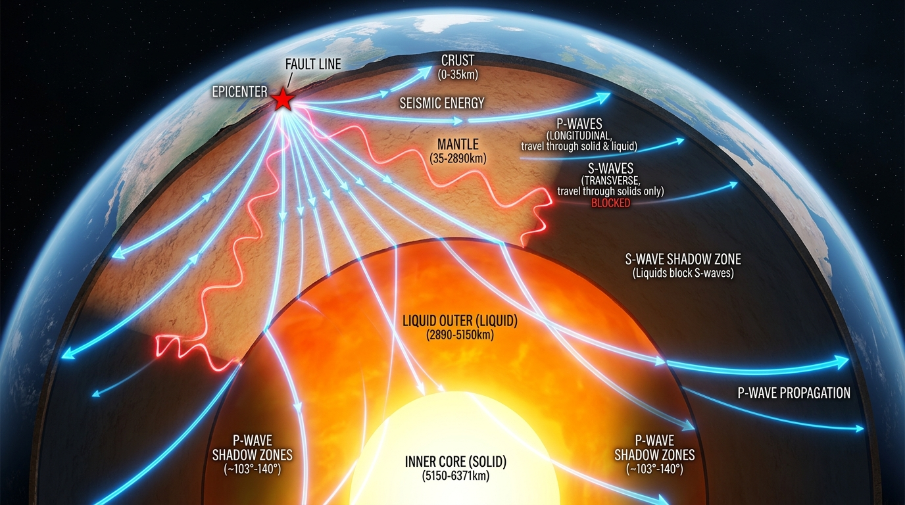
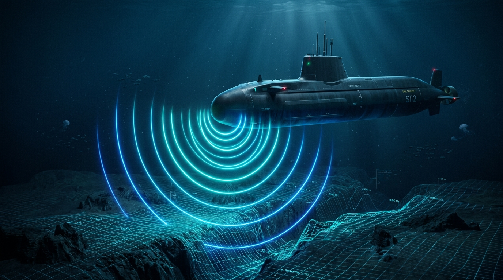

Bài 9: Sóng Ngang, Sóng Dọc, Sự Truyền Năng Lượng Của Sóng Cơ
Chương 2: Sóng — Sách giáo khoa Vật lí 11 (Chương trình GDPT 2018)
1. Sóng ngang (Transverse Waves)
a) Định nghĩa
Định nghĩa sóng ngang:
Sóng ngang là sóng trong đó các phần tử của môi trường dao động theo phương vuông góc với phương truyền sóng.
Ví dụ trực quan:
- Sóng trên sợi dây đàn hồi: Khi căng một sợi dây mềm nằm ngang và cho đầu dây dao động lên xuống theo phương thẳng đứng, các biến dạng hình sin sẽ chạy dọc theo sợi dây nằm ngang. Từng mẩu nhỏ của sợi dây chỉ chuyển động lên xuống tại chỗ quanh vị trí cân bằng, vuông góc với hướng sóng truyền.
- Sóng trên mặt nước: Khi ném một viên sỏi xuống mặt nước phẳng lặng, các gợn sóng hình tròn lan tỏa rộng ra xa theo phương ngang. Một chiếc lá khô hoặc chiếc phao nổi trên mặt nước chỉ dao động nhấp nhô lên xuống theo phương thẳng đứng.
Quan sát: Hạt màu đỏ chỉ dao động thẳng đứng tại chỗ quanh vị trí cân bằng cố định (trục thẳng đứng nét đứt màu đỏ), không hề bị sóng cuốn trôi theo phương ngang!
b) Cơ chế biến dạng đàn hồi vi mô và môi trường lan truyền
Để sóng ngang có thể lan truyền được, môi trường phải có khả năng sinh ra lực đàn hồi chống lại sự biến dạng lệch (còn gọi là biến dạng trượt hoặc biến dạng cắt). Khi một lớp phần tử bị kéo lệch khỏi vị trí cân bằng, các liên kết giữa các lớp phân tử lân cận phải đủ bền vững để kéo lớp kế tiếp dao động theo.
Các phân tử liên kết rất chặt chẽ trong mạng tinh thể. Khi một lớp phân tử bị trượt lệch, lực đàn hồi cắt phục hồi mạnh mẽ xuất hiện, kéo các phân tử lân cận chuyển động theo. Do đó, sóng ngang truyền rất tốt trong chất rắn.
Tại mặt thoáng chất lỏng, lực căng bề mặt và trọng lực đóng vai trò như một màng đàn hồi mỏng, kéo các phần tử nước trở về vị trí cân bằng khi bị nâng lên hoặc hạ xuống, cho phép sóng ngang truyền trên bề mặt chất lỏng.
2. Sóng dọc (Longitudinal Waves)
a) Định nghĩa
Định nghĩa sóng dọc:
Sóng dọc là sóng trong đó các phần tử của môi trường dao động theo phương trùng (hoặc song song) với phương truyền sóng.
Ví dụ trực quan:
- Sóng trên lò xo mềm: Khi đặt một lò xo ống dài nằm ngang trên mặt bàn nhẵn và tác dụng lực nén dãn một đầu lò xo dọc theo trục của nó, các vòng lò xo sẽ dao động qua lại dọc theo trục. Trên lò xo sẽ xuất hiện các đoạn vòng nén sít nhau (vùng nén) xen kẽ các đoạn vòng dãn thưa nhau (vùng dãn) truyền dần về phía đầu bên kia.
- Sóng âm trong không khí: Màng loa chuyển động tới lui dọc theo trục loa, ép các lớp không khí phía trước lại rồi dãn ra liên tiếp, tạo thành các đợt sóng áp suất dọc lan truyền qua không khí đến tai người nghe.
Quan sát: Vòng lò xo màu đỏ chỉ dao động qua lại dọc theo trục nằm ngang quanh vị trí cân bằng cố định (trùng phương truyền sóng), trong khi các vùng nén và vùng dãn di chuyển liên tục sang phải!
b) Cơ chế biến dạng đàn hồi vi mô và môi trường lan truyền
Sóng dọc xuất hiện khi môi trường chịu biến dạng nén và dãn thể tích. Khi một vùng vật chất bị nén ép lại, khoảng cách giữa các phân tử giảm xuống làm lực đẩy phân tử tăng vọt, tạo áp suất cao đẩy các phân tử xung quanh dạt ra. Khi vùng vật chất bị kéo dãn, áp suất giảm, lực hút phân tử có xu hướng kéo các phân tử xung quanh trở lại.
3. Bảng so sánh đặc tính giữa sóng ngang và sóng dọc
| Đặc điểm so sánh | Sóng ngang (Transverse Wave) | Sóng dọc (Longitudinal Wave) |
|---|---|---|
| Phương dao động | Vuông góc với phương truyền sóng. | Trùng (song song) với phương truyền sóng. |
| Bản chất biến dạng | Biến dạng lệch (biến dạng trượt, cắt lớp). | Biến dạng nén – dãn thể tích (thay đổi mật độ, áp suất). |
| Môi trường truyền sóng |
• Trong chất rắn. • Trên bề mặt chất lỏng. ✗ Không truyền trong lòng lỏng và khí. |
• Trong chất rắn. • Trong chất lỏng. • Trong chất khí. ✓ Truyền được trong cả 3 môi trường. |
| Hình thái quan sát | Gồm các đỉnh sóng (gợn lồi) và đáy sóng (gợn lõm) xen kẽ. | Gồm các vùng nén (mật độ hạt dày) và vùng dãn (mật độ hạt thưa) nối tiếp. |
| Ví dụ tiêu biểu | Sóng trên dây căng, sóng mặt nước, sóng địa chấn thứ cấp ($S$). | Sóng âm truyền qua không khí/nước, sóng trên lò xo nén dãn, sóng địa chấn sơ cấp ($P$). |
4. Quá trình truyền năng lượng của sóng cơ
a) Bản chất truyền năng lượng
Quá trình truyền sóng cơ học đồng thời là quá trình truyền năng lượng dao động từ nguồn phát ra các vùng không gian xung quanh:
- Nguồn sóng thực hiện công cơ học truyền động năng và thế năng cho các phần tử tiếp giáp tại nguồn.
- Các phần tử môi trường nhận năng lượng, thực hiện dao động điều hòa tại chỗ quanh vị trí cân bằng cố định của chúng, tuyệt đối không chuyển dịch tịnh tiến theo sóng.
- Thông qua lực tương tác đàn hồi, năng lượng được chuyển giao tuần tự từ phần tử này sang phần tử kế tiếp dọc theo hướng truyền sóng.
b) Năng lượng dao động của phần tử môi trường
Xét một phần tử môi trường có khối lượng $m$, dao động điều hòa với biên độ $A$ và tần số góc $\omega = 2\pi f$. Cơ năng dao động toàn phần của phần tử là:
Năng lượng sóng tỉ lệ thuận với bình phương biên độ ($A^2$) và bình phương tần số dao động ($f^2$).
c) Cường độ sóng ($I$)
Định nghĩa Cường độ sóng:
Cường độ sóng ($I$) tại một điểm là năng lượng sóng truyền qua một đơn vị diện tích đặt vuông góc với phương truyền sóng trong một đơn vị thời gian.
• $E$: Năng lượng sóng truyền qua diện tích $S$ ($\text{J}$).
• $t$: Khoảng thời gian truyền năng lượng ($\text{s}$).
• $\mathcal{P} = \frac{E}{t}$: Công suất phát sóng của nguồn ($\text{W}$).
• $S$: Diện tích mặt sóng vuông góc với phương truyền ($\text{m}^2$).
• $I$: Cường độ sóng, đơn vị đo là oát trên mét vuông ($\text{W/m}^2$).
d) Sự suy giảm biên độ và cường độ sóng khi lan truyền
Khi sóng truyền ra xa nguồn phát, biên độ dao động và cường độ sóng có xu hướng giảm dần bởi hai nguyên nhân:
- Sự hấp thụ năng lượng của môi trường: Do lực cản và ma sát nội phân tử, một phần năng lượng cơ học bị chuyển hóa thành nhiệt năng làm nóng môi trường.
- Sự mở rộng hình học của mặt sóng:
- Sóng cầu (Không gian 3 chiều): Năng lượng từ nguồn điểm tỏa đều ra mặt cầu có diện tích $S = 4\pi r^2$. Cường độ sóng tại điểm cách nguồn khoảng $r$ là: $$I = \frac{\mathcal{P}}{4\pi r^2} \implies I \propto \frac{1}{r^2}$$ Cường độ sóng tỉ lệ nghịch với bình phương khoảng cách. Vì năng lượng tỉ lệ với $A^2$, biên độ sóng giảm tỉ lệ nghịch với khoảng cách bậc nhất: $A \propto \frac{1}{r}$.
- Sóng tròn trên mặt nước (2 chiều): Năng lượng phân bố trên đường tròn chu vi $2\pi r$, biên độ sóng giảm tỉ lệ nghịch với căn bậc hai của khoảng cách: $A \propto \frac{1}{\sqrt{r}}$.
- Sóng trên sợi dây hoặc thanh hẹp (1 chiều): Nếu bỏ qua ma sát và lực cản, năng lượng truyền tập trung theo một đường nên biên độ sóng coi như không đổi dọc theo dây.
5. Sóng địa chấn P và S: Khám phá cấu trúc lòng Trái Đất
Động đất sinh ra các chấn động cơ học khổng lồ lan truyền qua các tầng địa chất dưới dạng các sóng địa chấn. Việc phân tích thời gian và quỹ đạo truyền của hai loại sóng sơ cấp và thứ cấp đã giúp nhân loại giải mã cấu trúc sâu kín bên trong lòng Trái Đất:

- Bản chất: Sóng dọc (biến dạng nén dãn).
- Tốc độ: Nhanh nhất ($v_P \approx 5 - 8\text{ km/s}$ ở vỏ Trái Đất).
- Khả năng truyền: Truyền qua được cả tầng đá rắn và vùng chất lỏng.
- Ghi nhận: Đến trạm địa chấn đầu tiên.
- Bản chất: Sóng ngang (biến dạng trượt cắt).
- Tốc độ: Chậm hơn sóng P ($v_S \approx 3 - 5\text{ km/s}$).
- Khả năng truyền: Chỉ truyền qua chất rắn, bị chặn hoàn toàn bởi chất lỏng.
- Ghi nhận: Đến trạm địa chấn sau sóng P.
Khi các trạm địa chấn trên toàn cầu ghi nhận dữ liệu từ một trận động đất lớn, các nhà khoa học nhận thấy: Ở vùng đối diện tâm chấn (góc lệch từ $103^\circ$ đến $142^\circ$), trạm đo hoàn toàn không ghi nhận được sóng $S$ (gọi là vùng bóng mờ của sóng S - S-wave shadow zone). Do sóng ngang $S$ không thể truyền qua chất lỏng, vùng bóng mờ này chính là bằng chứng xác thực chứng minh lớp lõi ngoài (outer core) của Trái Đất ở trạng thái lỏng.
6. Ứng dụng thực tiễn của sóng cơ trong kĩ thuật & đời sống
Thiết bị siêu âm phát chùm sóng âm tần số cao (sóng dọc, $f > 20\text{ kHz}$) truyền qua các mô mềm cơ thể. Do các mô, cơ, dịch và xương có mật độ và tốc độ truyền sóng khác nhau, các xung sóng phản xạ trở lại đầu dò tại các mặt phân cách, cho phép máy tính tái tạo hình ảnh cấu trúc nội tạng, tim mạch và thai nhi với độ an toàn cao.
Vì sóng điện từ bị nước biển hấp thụ rất mạnh, sóng âm (sóng dọc) là phương tiện truyền dẫn tín hiệu chủ yếu dưới nước. Tàu ngầm và tàu khảo sát sử dụng hệ thống SONAR phát các xung sóng âm xuống đáy biển và thu sóng phản xạ để đo độ sâu đáy biển, dò tìm luồng cá, lập bản đồ địa hình và định vị chướng ngại vật ngầm.

Sóng siêu âm được truyền vào các thanh ray xe lửa, đường ống dẫn khí áp suất cao, hoặc kết cấu kim loại máy bay. Nếu bên trong chi tiết có vết nứt tế vi hoặc bọt khí, một phần sóng siêu âm sẽ bị phản xạ sớm trước khi chạm đến đáy vật thể, giúp các kĩ sư phát hiện khuyết tật bên trong mà không cần tháo dỡ hay phá hủy kết cấu.
7. Các dạng bài tập trọng tâm & Ví dụ mẫu
Ví dụ 1: Một chiếc màng loa gắn ở thành một bể nước dao động điều hòa theo phương vuông góc với thành bể, phát ra sóng âm truyền vào trong khối nước. Hỏi sóng âm truyền trong khối nước là sóng dọc hay sóng ngang? Nếu sóng này truyền tiếp lên tới mặt thoáng phân cách giữa nước và không khí thì các gợn sóng nhấp nhô trên mặt thoáng thuộc loại sóng nào?
Hướng dẫn giải:
• Sóng âm phát ra trong lòng khối nước là sóng dọc. Bản chất của sóng âm trong chất lỏng là sự nén dãn tuần hoàn của các lớp phân tử nước theo phương truyền sóng. Trong lòng chất lỏng không có lực đàn hồi chống biến dạng trượt nên sóng ngang không thể tồn tại bên trong lòng khối nước.
• Khi dao động truyền lên tới mặt thoáng phân cách giữa nước và không khí, lực căng bề mặt nước và trọng lực đóng vai trò lực đàn hồi màng, làm các phần tử nước dao động nhấp nhô theo phương thẳng đứng vuông góc với mặt nước nằm ngang. Do đó, các gợn sóng quan sát được trên mặt thoáng là sóng ngang.
Ví dụ 2: Một nguồn âm điểm phát sóng âm hình cầu đẳng hướng ra môi trường xung quanh với công suất phát không đổi $\mathcal{P} = 12,56\text{ W}$. Giả sử môi trường đồng tính và không hấp thụ âm (lấy $\pi \approx 3,14$).
a) Tính cường độ âm $I_1$ tại điểm $M$ cách nguồn âm một khoảng $d_1 = 1\text{ m}$.
b) Tại điểm $N$ cách nguồn âm một khoảng $d_2 = 2\text{ m}$, cường độ âm $I_2$ bằng bao nhiêu? So sánh $I_2$ với $I_1$.
Hướng dẫn giải:
• a) Cường độ âm tại điểm $M$ cách nguồn khoảng $d_1 = 1\text{ m}$ là: $$I_1 = \frac{\mathcal{P}}{4\pi d_1^2} = \frac{12,56}{4 \cdot 3,14 \cdot 1^2} = \frac{12,56}{12,56} = 1\text{ W/m}^2$$
• b) Cường độ âm tại điểm $N$ cách nguồn khoảng $d_2 = 2\text{ m}$ là: $$I_2 = \frac{\mathcal{P}}{4\pi d_2^2} = \frac{12,56}{4 \cdot 3,14 \cdot 2^2} = \frac{12,56}{12,56 \cdot 4} = 0,25\text{ W/m}^2$$
• Nhận xét: Khi khoảng cách tăng gấp đôi ($d_2 = 2d_1$), cường độ sóng giảm đi $4$ lần ($I_2 = \frac{1}{4}I_1$), tuân theo định luật tỉ lệ nghịch với bình phương khoảng cách của sóng mặt cầu.
Ví dụ 3: Một trận động đất xảy ra tại tâm chấn $O$, đồng thời phát ra sóng sơ cấp $P$ (tốc độ $v_P = 8\text{ km/s}$) và sóng thứ cấp $S$ (tốc độ $v_S = 5\text{ km/s}$). Một trạm quan trắc địa chấn ghi nhận được sóng $P$ trước sóng $S$ một khoảng thời gian $\Delta t = 15\text{ s}$. Coi sóng truyền thẳng trong lớp vỏ Trái Đất. Tính khoảng cách $d$ từ trạm quan trắc đến tâm chấn động đất.
Hướng dẫn giải:
Thời gian sóng $P$ truyền từ tâm chấn đến trạm đo là: $t_P = \frac{d}{v_P}$.
Thời gian sóng $S$ truyền từ tâm chấn đến trạm đo là: $t_S = \frac{d}{v_S}$.
Vì sóng $S$ truyền chậm hơn nên đến sau sóng $P$ một khoảng thời gian $\Delta t$: $$\Delta t = t_S - t_P = \frac{d}{v_S} - \frac{d}{v_P} = d \left(\frac{1}{v_S} - \frac{1}{v_P}\right)$$ Thay số: $$15 = d \left(\frac{1}{5} - \frac{1}{8}\right) = d \left(\frac{8 - 5}{40}\right) = d \cdot \frac{3}{40}$$ $$\implies d = \frac{15 \cdot 40}{3} = 200\text{ km}$$
Vậy trạm quan trắc địa chấn cách tâm chấn động đất $200\text{ km}$.
8. Ghi nhớ cốt lõi
- Sóng ngang: Phương dao động của phần tử vuông góc với phương truyền sóng. Truyền được trong chất rắn và trên bề mặt chất lỏng; không truyền trong lòng chất lỏng và chất khí.
- Sóng dọc: Phương dao động của phần tử trùng (song song) với phương truyền sóng. Truyền được trong cả chất rắn, chất lỏng và chất khí.
- Bản chất truyền sóng: Là quá trình truyền trạng thái dao động và năng lượng; các phần tử môi trường chỉ dao động tại chỗ quanh vị trí cân bằng cố định của chúng, không chuyển dịch tịnh tiến theo sóng.
- Cường độ sóng: $I = \frac{\mathcal{P}}{S}$ ($\text{W/m}^2$). Đối với sóng mặt cầu trong không gian 3 chiều đồng tính không hấp thụ năng lượng, cường độ sóng tỉ lệ nghịch với bình phương khoảng cách ($I \propto \frac{1}{r^2}$), biên độ sóng tỉ lệ nghịch với khoảng cách ($A \propto \frac{1}{r}$).
- Khoa học địa chấn: Sóng sơ cấp $P$ là sóng dọc; sóng thứ cấp $S$ là sóng ngang không truyền qua chất lỏng, chứng minh vùng lõi ngoài Trái Đất ở thể lỏng.
Luyện tập trực tuyến ngay!
Làm bài tập trắc nghiệm trực tuyến 3 phần (Thang điểm 10 chuẩn GDPT 2018) để củng cố toàn diện kiến thức Bài 9.
Vào làm bài trắc nghiệm online (15 phút)